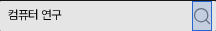
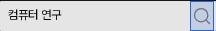

그림은 그대로, 눌리는 영역만 넓히기
DS-017 호버 적용 완료 · 클릭 영역 제안은 미적용먼저, 확정·적용한 내용
헤더 검색: 기본 #737373 → 호버 #404040. 그림 20px·선 굵기 1.5는 그대로다. 실제 앱의 한국어·영어 기본/호버 4장이 원본/승인 견본과 각각 일치했다.
본문 14px/28px · 글 제목 20px/600 유지. 명확한 문제가 없으면 기존 디자인을 유지한다(DS-016).
왜 이 세 곳만 바꾸나
현재 문제: 헤더·세미나·모바일의 검색 실행 버튼은 눌리는 영역이 작고 입력칸에 바로 붙어 있다. 손이 조금만 빗나가면 입력칸을 누르는 배치다.
변경 이유: WCAG 2.2의 클릭 영역 기준은 기본 24×24px 또는 충분한 주변 간격 등을 허용한다. 세 버튼은 간격을 확인하는 24px 지름의 원도 입력칸과 겹쳐, 간격 예외를 충족하지 못한다.
기대 효과: 돋보기 그림을 키우지 않고 클릭할 수 있는 면적을 확보한다. 기본 모습과 위치는 유지한다.
| 검색 실행 | 현재 클릭 영역 | 추천 영역 | 그림 |
|---|---|---|---|
| 헤더 · 데스크톱 | 20×30px | 24×30px | 20×20 유지 |
| 세미나 · 두 폭 | 20×20px | 24×24px | 20×20 유지 |
| 모바일 검색 실행 | 19×18px | 24×24px | 기존 19×18 유지 |
작은 아이콘을 전부 키우지는 않는다. 목록 검색·메뉴 열기·Dialog 닫기는 이미 24px이고, 작은 메뉴 닫기·모바일 검색 열기/닫기는 확인한 주변 간격이 충분해 유지한다.
실제 앱에서 비교
현재

클릭 영역 20×30px
추천안 · 그림·위치 유지

클릭 영역 24×30px
파란 면은 설명용 표시다. 체크를 끄면 실제 모습만 보인다. 새 배경색이나 외곽선을 앱에 넣는 제안이 아니다.
한·영 8장면에서 짧은 문구를 입력한 검색 바 이미지는 전후 픽셀이 동일했다. 아이콘과 바의 위치·크기가 같고, 넓어진 버튼 모서리도 실제 버튼 영역으로 판정됐다.
영향: 입력칸의 실제 폭은 헤더·세미나 2px, 모바일 2.5px 줄어든다. 텍스트 시작점은 같지만 긴 입력문의 가로 스크롤 시점은 달라질 수 있다. 호버·키보드 초점의 범위는 넓어진 버튼을 따른다.
이번 판단 · I-Q2
그림과 기본 화면을 유지하면서 세 검색 실행의 클릭 영역만 최소 24px로 넓힐까?
검색 로직·아이콘 종류·입력 초점 스타일은 이 제안의 변경 범위가 아니다.